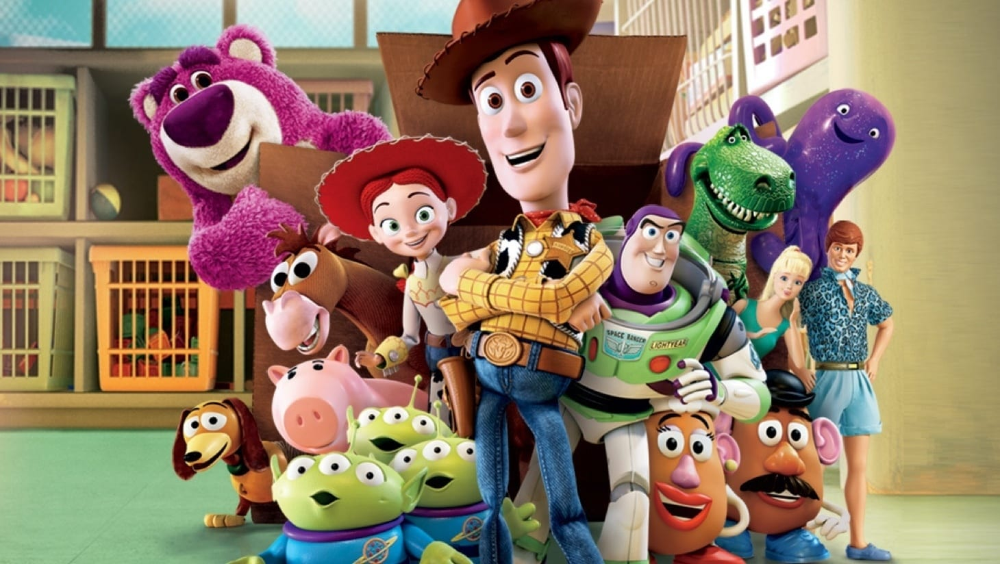

Filmes da Disney famosos do Ano 2000!
Toy Story
Toy Story é um filme americano de comédia animado por computador de 1995 dirigido por John Lasseter, produzido pela Pixar Animation Studios e lançado pela Walt Disney Pictures. A primeira parcela da franquia Toy Story, foi o primeiro longa-metragem inteiramente animado por computador, bem como o primeiro longa-metragem da Pixar.
Clique aqui 
Carros
Relâmpago McQueen, um carro de corrida, aprende uma dura lição de vida quando danifica muitas propriedades em Radiator Springs. Sua tarefa é reparar os danos causados antes que ele possa voltar à estrada.
Clique aqui
OS Incriveis
Forçado a adotar uma identidade civil e preso em um emprego de colarinho branco, o Sr. Incrível anseia voltar à ação. Quando ele é atraído para uma armadilha pela Síndrome do mal, sua família tenta salvá-lo.
Clique aqui